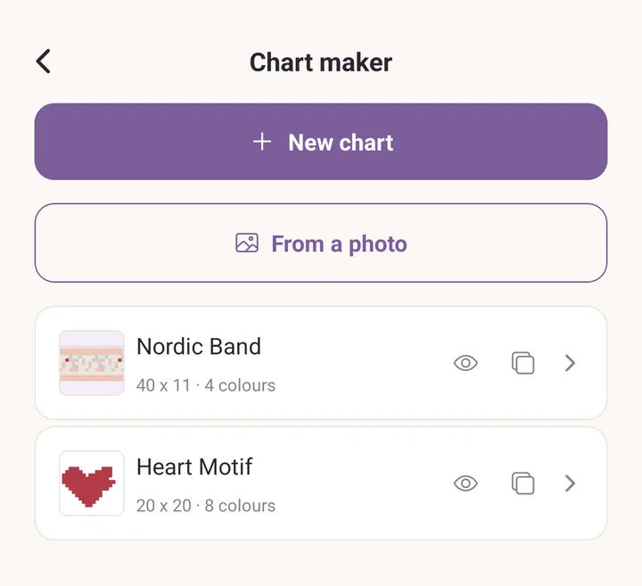
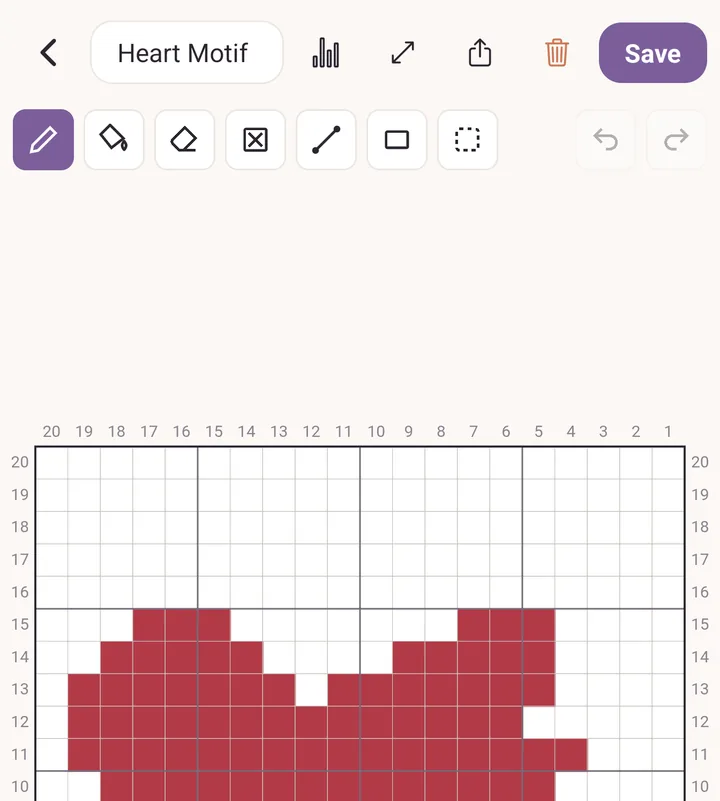
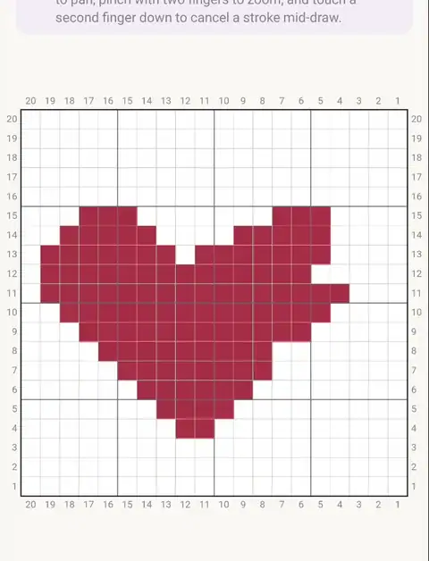
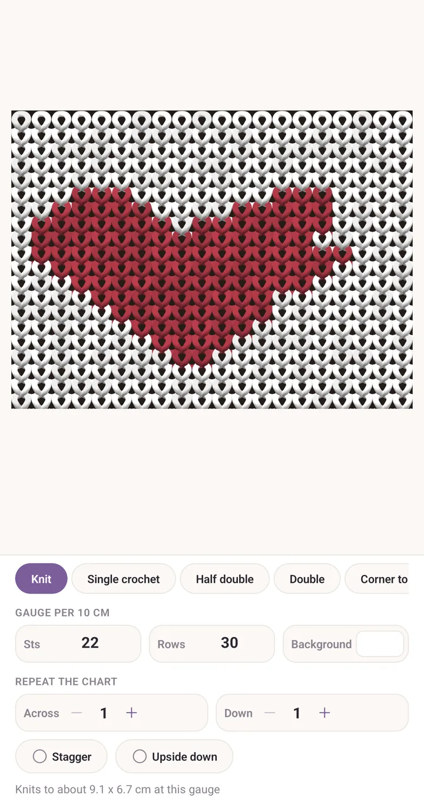
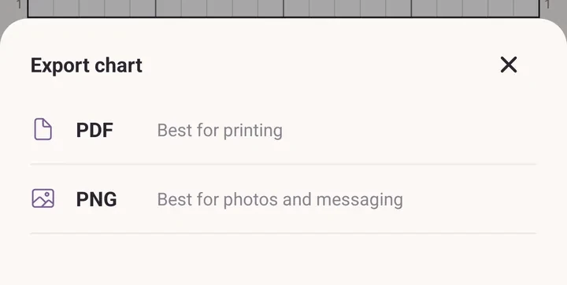

Colour charts
Draw colourwork on a grid of squares, one square per stitch. Fair isle, pixel motifs, graphgans, crochet blocks, anything you would otherwise draw on graph paper.
A chart you draw here can be exported for printing, added to a pattern, previewed as knitted fabric, or followed stitch by stitch while you make it.
On this page 16
Opening it
Tap More, then Colour charts in the Workshop section.
The screen lists every chart you have made. Under In your patterns it also lists the charts that live inside your patterns, so everything you have drawn is in one place.

Starting a chart
- Tap New chart.
- Type the size: Stitches (width) and Rows (height). One square is one stitch.
- Tap Create chart.
A chart can be up to 400 squares each way. The size is not fixed forever: Resize chart in the header changes it later.
To start from a picture instead, tap From a photo. That flow has its own walk-through in Draw a chart.
The drawing tools
The tool row sits above the grid.
- Pencil: paint one square at a time, or drag to paint a run.
- Fill: flood an area of the same colour.
- Eraser: take the colour back off, leaving a plain square.
- No stitch: mark squares where the knitting works no stitch at all (see below).
- Line: drag from one square to another for a straight run.
- Rectangle: drag out a box.
- Select: draw a box around part of the chart and work on that part only.
Undo and Redo are at the right-hand end of the row.

With Select active, a second row appears: Copy, Paste, Move, Mirror sideways, Mirror up and down, Repeat, Clear cells and Deselect. Repeat tiles the selection side by side, using the across, down and gap fields, then Apply or Cancel.
Every one of those is a single change. One tap on Undo takes the whole mirror or the whole repeat back, not one square of it.
Copy works between charts too. Copy a motif in one chart, open another, and Paste puts it there.
Moving around the grid
These four gestures are worth learning before anything else.
- One finger on the grid paints.
- Start the drag outside the grid to pan. The margin around the chart is the handle for moving the paper.
- Pinch with two fingers to zoom.
- Touch a second finger down to cancel a stroke you are part way through. The stroke is undone rather than committed.

If you draw with a stylus, the app notices: the pen draws, a finger pans from anywhere, and a resting hand is ignored. Exit pen mode appears in the tool row to hand drawing back to your finger.
Colours
The colour strip runs along the bottom.
- The first chip is the Background, the colour of every square you have not painted. Tap it to change it.
- Tap a colour to select it. Tap the selected colour again to open Change this colour, then Use this colour to apply it.
- Tap + at the end of the strip to add a colour. A chart can hold up to 20.
- Delete this colour asks Replace with first, and every stitch in the deleted colour becomes the one you pick.
The picker offers your saved colours and the colours already in your yarn stash, so a chart can be drawn in the yarn you actually own.
Squares with no stitch
Knitting gets narrower as it goes up: a yoke, a shaped crown, a mitten top. Use No stitch to paint the squares where there is no stitch to work, and the chart can say so.
A no-stitch square is crossed through and never coloured in. It stays crossed through in the preview, in the small picture on the chart list, and in every export. Nothing shifts sideways to close the gap, so the stitches you painted stay in the columns you painted them in.
Colours used
More at the top right, then Chart, opens Colours used: how many stitches each colour covers, as a count and as a share of the whole chart.
Background (unpainted) is counted too, so the figure you read is how much of each yarn the piece takes, main colour included.
Yarn per colour
More, then Yarn per colour (or the button under Colours used) says how much of each colour to buy.
- How big you knit it. The chart is one repeat. Type how many times it repeats across and up, or the stitches and rows of your knitting: typing one fills in the other.
- Yarn for each colour. Tap a colour, then pick a yarn from your stash or search Purl's yarn catalogue, and tap its shade. The gauge comes from the yarn's ball band; type your own if your swatch differs.
- Each colour shows metres, grams and skeins: every stitch at your gauge, the strands carried behind colourwork, plus 10 percent.
- Add to shopping list puts the skeins on your shopping list, less what your stash already holds.
The key under every export names each colour's yarn and shade.
Preview: the chart as fabric
Tap Preview under the grid to see the chart as fabric rather than as squares.

Across the top, three looks: 3D, 2D and Chart.
Under the fabric, the stitch: Knit, or the crochet stitches Single crochet, Half double, Double and Corner to corner. Each stitch keeps its own gauge, so switching between them shows each one at its own proportions.
Then the controls:
- Gauge per 10 cm, as Sts and Rows. For corner to corner it reads Blocks per 10 cm, Across and Down.
- Background, the colour of the unpainted squares.
- Repeat the chart, Across and Down, for seeing the motif tiled the way it will actually be worked.
- Stagger, to offset every other repeat.
- Upside down, for a chart worked top down.
The line at the bottom tells you roughly what the piece measures at the gauge you typed, repeats included. That is usually the reason to type a gauge at all.
The share icon in the header opens Preview image: Share, Save to device on Android, and Add to pattern photos when the chart belongs to a pattern.
What you set here is remembered on the chart, so it opens the same way next time.
Exporting
More at the top right of the chart editor, then Export, opens Export chart:
- PDF, best for printing.
- PNG, best for photos and messaging.

Both carry row and stitch numbers on all four edges, in the usual knitting direction: stitch 1 at the right, row 1 at the bottom. On Android you are asked whether to Save to device or Share.
Charts inside a pattern
A chart does not have to stand alone.
- In a pattern you are writing, the Colour charts section has Add chart to draw a new one and Add an existing chart to copy one in from Colour charts.
- On the Colour charts list, charts that live in patterns are grouped under In your patterns. Editing one there saves it back into its pattern.
Following a chart while you knit
Sometimes the chart is the whole pattern. There is no written instruction to read, just the grid.
- Go to the Projects tab and start a project.
- Under Pattern, tap Choose pattern. Your charts are listed alongside your written patterns and PDFs.
- Pick the chart, save, and use Open & track.
The tracker keeps your place, row by row and stitch by stitch, and remembers it between sessions. A project can hold more than one chart, for a front, a back and a sleeve, and you switch between them without losing any of their places.
To follow a chart printed inside a PDF pattern instead, see PDF tools.
Folders
Folders keep a long list of charts tidy. Colour charts has its own folders, apart from the ones on Patterns and Projects.
- Hold a chart until it is selected. Tap other charts to select them too.
- Tap Folder in the bar at the bottom.
- Pick a folder, or type a name and tap Create.
Once you have a folder, the folders sit above the list, with New folder beside their heading. Tap a folder to open it. Inside it, Add puts more charts in, Rename changes its name, and Delete folder removes it. The charts in a deleted folder go back to the main list; none of them is deleted.
Charts that live inside a pattern stay with their pattern, so they cannot be selected or put in a folder.
Sharing and importing a chart
Share sends a chart as a Purl file, not a picture. Another Purl user opens it, and it is added to their Colour charts, ready to edit.
- Hold the chart until it is selected.
- Tap Share in the bar at the bottom.
- Choose where the file goes: mail, a message, or Files.
Share sends one chart at a time. With more than one selected, Share is dimmed.
To add a chart someone sent you, open the file from mail or Files, and Purl adds it. Or tap Import at the top of Colour charts and pick the file. An imported chart is always a new chart; it never replaces one you have. A crochet chart file is imported from Crochet charts instead.
To print a chart or send it as a picture, use More, then Export, in the editor, as described under Exporting above.
Housekeeping
On the chart list, each chart row has an eye icon for Preview and a copy icon for Duplicate. Swipe a row to the left to reveal Delete, or select several charts and tap Delete in the bar at the bottom.
A chart that a project is using as its pattern cannot be deleted. The app names the projects instead, so you can detach it there first.
See also
- Draw a chart: a chart drawn start to finish, and a photo turned into a chart.
- Patterns: charts inside a pattern you write.
- Projects: tracking what you make.
- Yarn stash: where the stash colours in the picker come from.